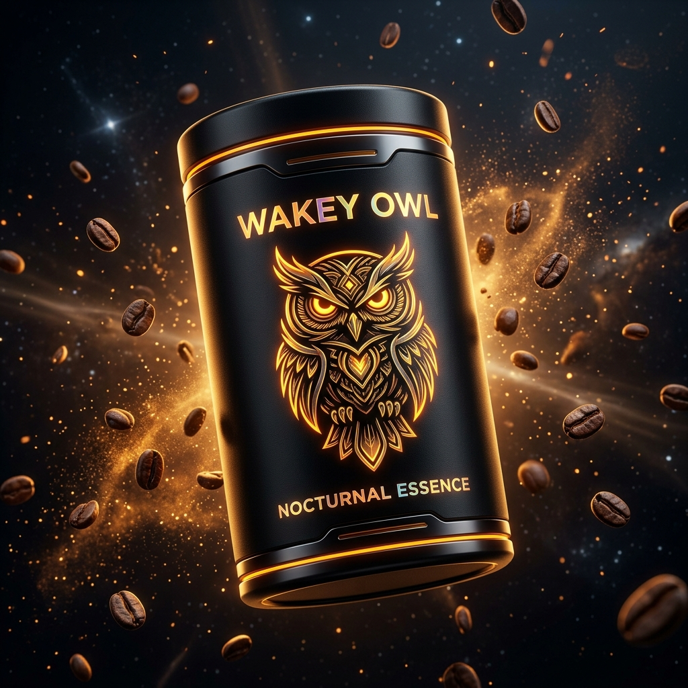

Royal Indian Coffee.
Nocturnal Precision.

Single-Estate Masterpieces
Carefully curated for India's connoisseurs. Single-estate lots with authentic traceability, distinct flavor notes, and gourmet pairings.
Frequently Asked Questions
The Royal Experience
"The Ratnagiri Anaerobic Natural is an astonishing revelation. The Alphonso mango notes and floral honey clarity rival the world's most expensive Panama Geishas. Wakey Owl has created true Indian luxury."
Vikramaditya Kirloskar
Art Collector & Connoisseur, Bengaluru"The Mysore Imperial Filter Blend brewed in their Hand-Hammered Brass Davarah is the definitive morning ritual in our residence. Heavy dark chocolate, rich chicory balance, zero harshness."
Radhika Singhania
Luxury Hospitality Director, Mumbai"Attikan Estate Reserve paired with warm Mysore Pak is sheer perfection. The AI Sommelier answered all my queries about brass extraction ratios with pinpoint accuracy."
Ananya Roy Chowdhury
Sommelier & Food Critic, New DelhiEnter The Inner Sanctuary
Receive priority allocations of 100-canister micro-lot harvests, private invitations to Bangalore & Mumbai tasting salons, and an immediate 15% Royal Privilege code.